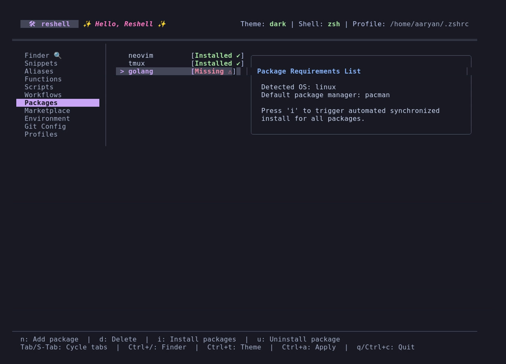
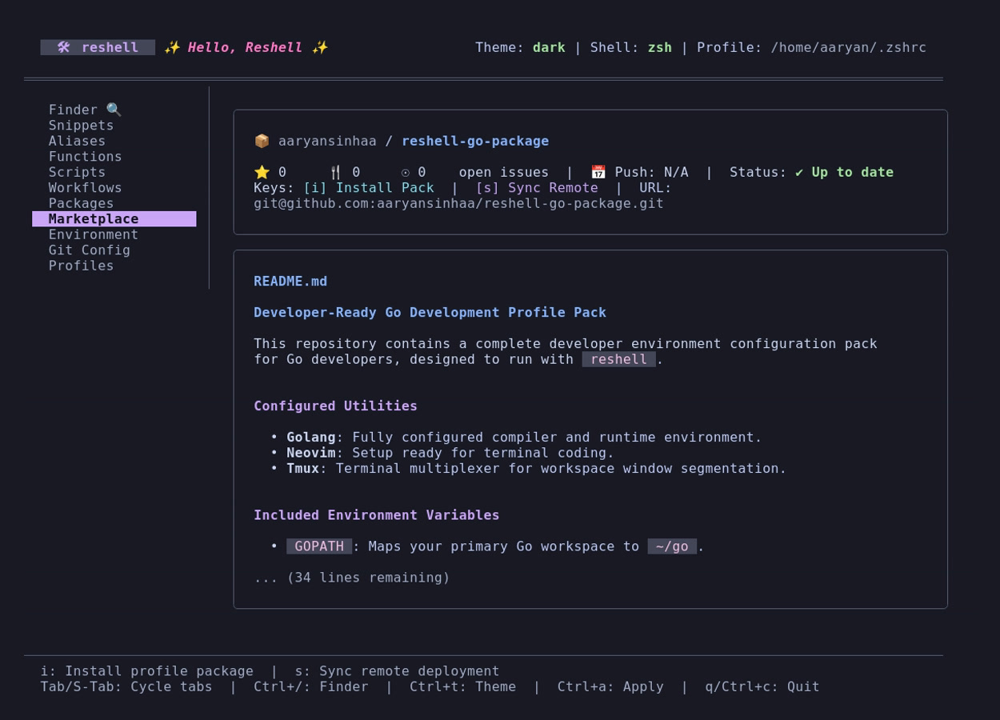

Package Installer & Marketplace
This section details how to manage system package dependencies and share configurations.
Package Installer
The package installer automates host package installation across environments. Define the required packages in config.toml:

packages = [
"git",
"fzf",
"bat",
"ripgrep",
"fd-find",
"tmux",
"lazygit"
]
Dashboard Package Management
Navigate to the Packages tab in the dashboard to manage system requirements:
- Add (
n): Appends a package name toconfig.toml. - Remove (
d): Removes a package name from the configuration list. - Uninstall (
u): Asynchronously removes the highlighted package from your host system. - Install (
i): Asynchronously installs all missing package dependencies.
Privilege Elevation (sudo)
For package operations requiring administrative privileges (e.g., apt-get, pacman):
- reshell checks for active credentials using
sudo -n truefirst. If cached, it bypasses the manual password prompt entirely. - If not cached, reshell prompts you for your password inside the dashboard.
- The password is piped to
sudo -Sstandard input to execute the installation asynchronously. - The process streams command outputs directly to the dashboard log viewport.
Marketplace Configuration Packs
Marketplace packages allow you to share environment configurations via Git repositories.
Importing Packages
To import configurations:
reshell install github.com/aaryansinhaa/reshell-java
The import process:
- Clones the remote Git repository into a temporary workspace.
- Reads the
reshell.tomlmanifest file from the repository root. - Displays a verification breakdown of all packages, variables, aliases, functions, and scripts, warns about third-party imports, and requests confirmation before merging.
- If approved, merges the parsed aliases, snippets, and environment variables into your configuration.
- Appends required packages to your global configuration list.
- Copies custom functions in
functions/to~/.config/reshell/functions/. - Copies scripts in
scripts/to~/.config/reshell/scripts/. - Displays a post-install summary reporting all successfully modified assets.
Manifest Schema (reshell.toml)
Example manifest for a marketplace configuration package:
[package]
name = "reshell-java"
description = "Java terminal configurations for developers"
[[aliases]]
name = "jrun"
value = "java -jar"
description = "Run a JAR file"
shell = "all"
enabled = true
[[variables]]
name = "JAVA_HOME"
value = "/usr/lib/jvm/java-17-openjdk-amd64"
description = "Java Home path"
enabled = true
[[snippets]]
name = "mvn-clean-install"
code = "mvn clean install -DskipTests"
description = "Maven build without running tests"
tags = ["maven", "java", "build"]
language = "bash"
[config]
packages = ["openjdk-17-jdk", "maven", "gradle"]
Remote Environment Synchronization
Apart from importing static packages, you can link your active profile environment to a remote Git repository to dynamically sync changes between different workstations.
Sync Command (reshell sync)
Running reshell sync performs a one-way (pull-only) synchronization to update your local workspace from the remote repository:
- Authentication Warning: Warns you that the sync connects to a remote Git repository and checks Git credentials.
- Retrieve Remote State: Fetches updates from the remote repository's branch and reads remote configurations.
- Merge and Resolve Conflicts:
- Compares items item-by-item.
- For package lists and marketplace references, it merges and de-duplicates them.
- For aliases, snippets, variables, workflows, custom functions, and script files, it prompts you interactively when a conflict is detected.
- Local Backup Commit: Once the configurations are merged programmatically, a commit is recorded in your local Git history (
[reshell] programmatically merged remote changes). This commit remains strictly local on your machine and is never pushed back to the remote, ensuring the remote repository's git log remains completely clean and free of automated tool commits.
Visual TUI Marketplace Integration

If a profile is configured with a remote_sync_url, the TUI Marketplace tab shifts from displaying generic onboarding instructions to displaying live remote deployment metadata:
- Remote Details: Displays the Remote URL, Last Sync timestamp, and active sync status (e.g.
Up to dateor⚠️ 3 commits behind). - GitHub Repository Metrics: Displays live metrics fetched during sync (or loaded from cache):
- ⭐ Stars: Community trust / validation.
- 🍴 Forks: Adaptations by other developers.
- 🐛 Open Issues: General compatibility and bugs tracking.
- 📅 Last Push: Recency and decay checks.
- Interactive Syncing: You can press
sinside the Marketplace tab to immediately trigger thesyncsubcommand inside the TUI. - README Rendering: Displays the synced
README.mdfile of the remote deployment inside the terminal utilizing a custom Markdown formatter.